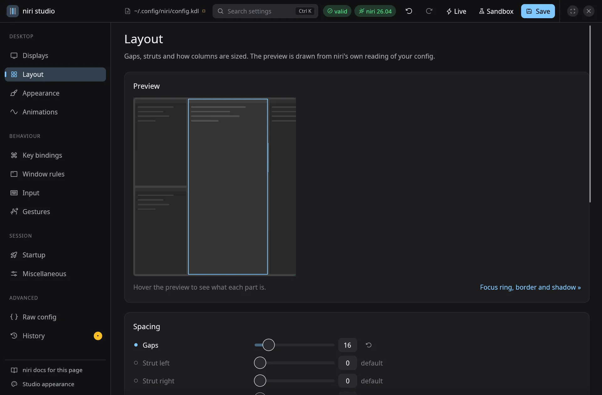
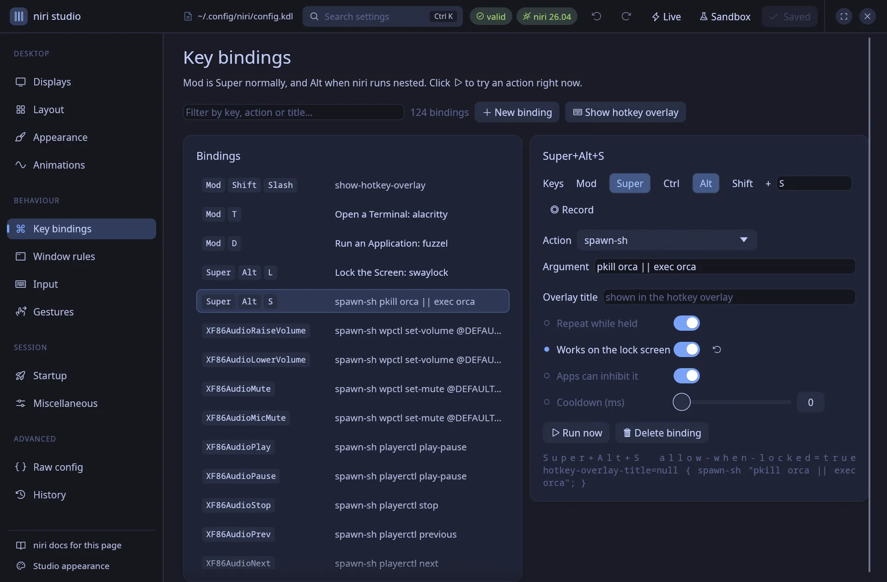
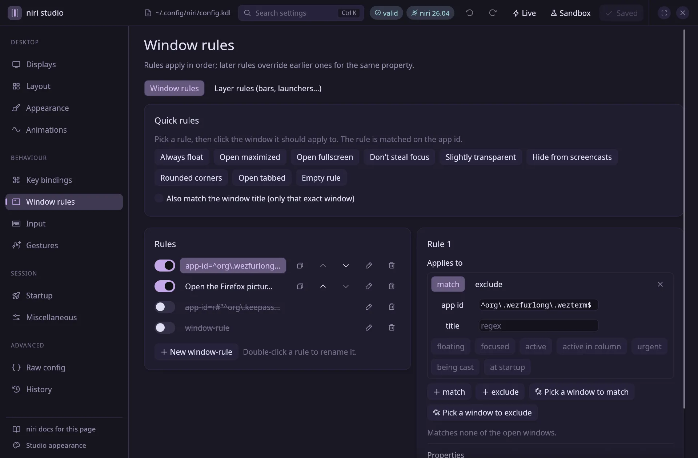
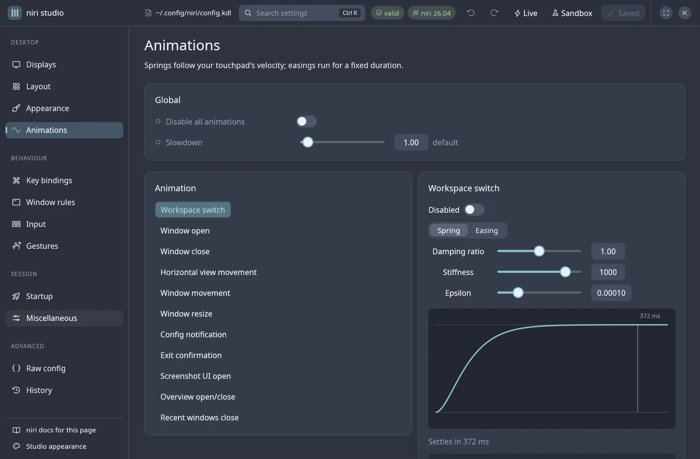
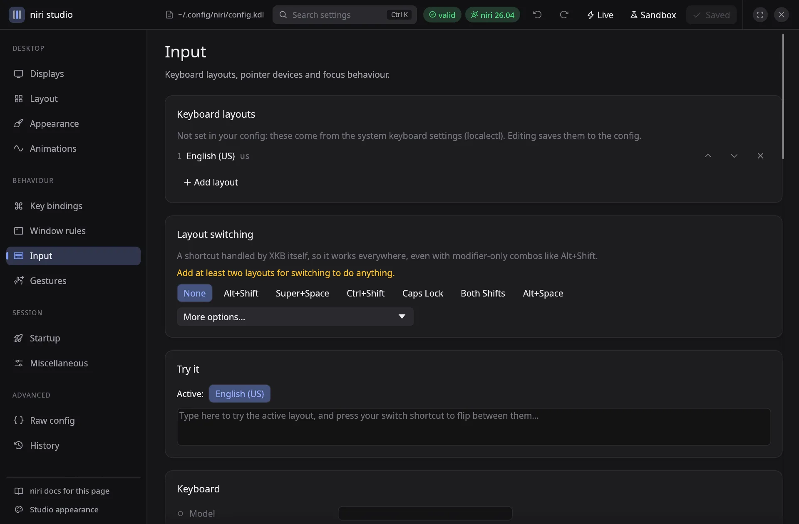
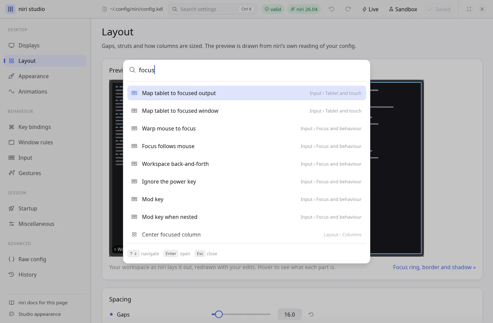
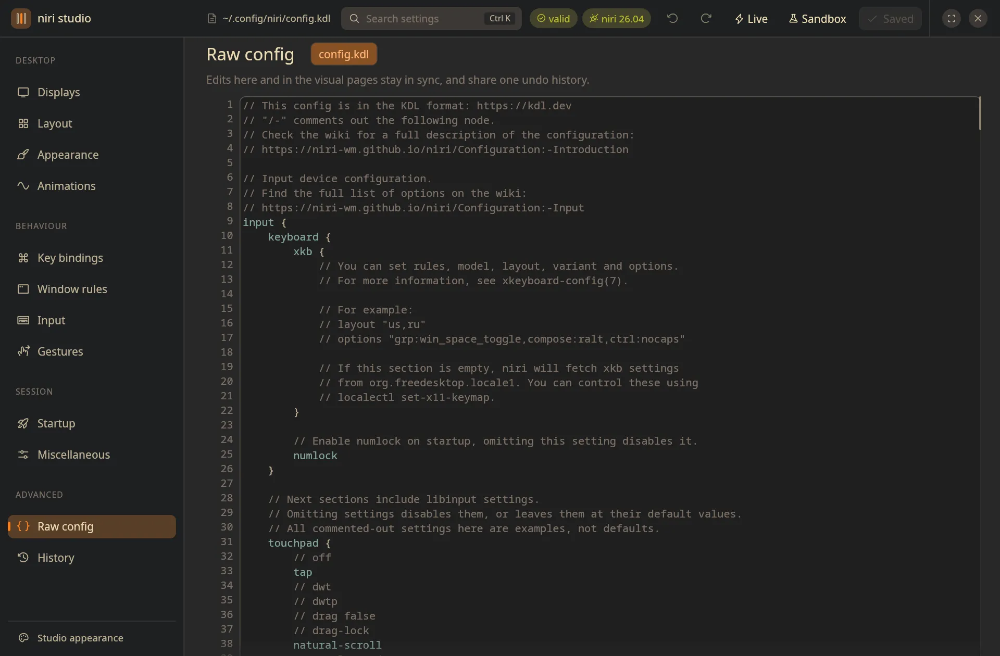
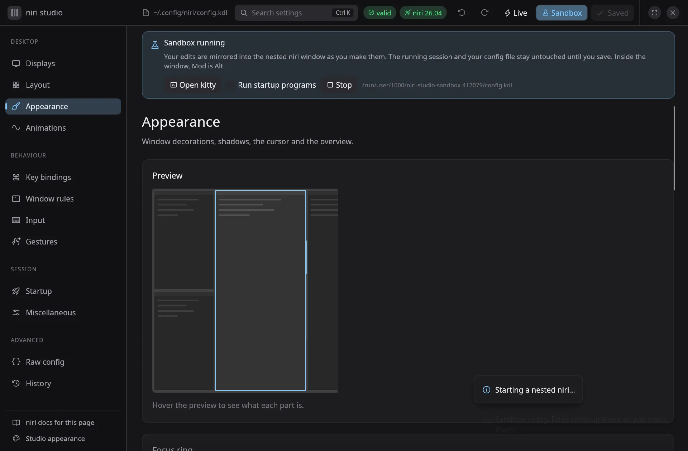

Keeps your file intact
Edits are spliced into the text. Comments, ordering and formatting you wrote are never rewritten, and everything written is KDL v1, which niri reads.
A visual editor for the niri compositor
Every option previewed live, every change checked by niri's own parser, and your comments, ordering and formatting left exactly as you wrote them.

Why it's different
Edits are spliced into the text. Comments, ordering and formatting you wrote are never rewritten, and everything written is KDL v1, which niri reads.
Every change is re-parsed with niri's own niri-config crate, so the errors you see are exactly the ones niri would report, with links to the line.
Saving is atomic and backs up the previous file. If niri rejects a reload, the backup comes back on its own; display changes revert in 15 seconds unless you keep them.
The tour
Search and filter every binding, record a new combination by pressing it (modifiers alone work too), choose whether it fires on press, release or both, pick an action from niri's catalogue and press ▶ to try it. Combinations bound twice are flagged.
Quick rules in two clicks: choose one, then click the window it should apply to. Rename, reorder, disable with KDL's /-, and see live which open windows each rule matches.
Spring and easing editors that use niri's own curve maths, draggable cubic-bézier handles and a live demo of how long each animation settles.
Keyboard layouts from the XKB catalogue, a layout switcher and a field to try the active layout, plus touchpad, mouse and focus behaviour.
Ctrl K searches every setting by name. Arrow keys, Enter, and the option flashes on its page.
A highlighted editor with niri's diagnostics inline. Edits here and on the visual pages stay in sync and share one undo history.






Make it yours
By default the app's accent follows your niri focus ring, so it matches your desktop. Pick a theme below: this page follows along.
Try before you save
Press Sandbox and niri opens nested, as a window, running a private copy of your config. Every valid edit is mirrored into it as you make it. Your file and your running session stay untouched until you save.

Get started
Cargo fetches niri's own config parser at a pinned commit, so niri studio accepts exactly what niri does. You need Rust 1.87+ and the libinput, libudev, Wayland and libxkbcommon development files; the README lists the packages for Fedora, Arch, Debian/Ubuntu and openSUSE.
git clone https://github.com/ulaas/niri-studio
cd niri-studio
./install.sh # → ~/.local/bin/niri-studio + desktop entryniri-studio from your app launcher, or pass a config path: niri-studio ~/.config/niri/config.kdl.cargo test --workspace round-trips real configs and checks every option against niri's parser.